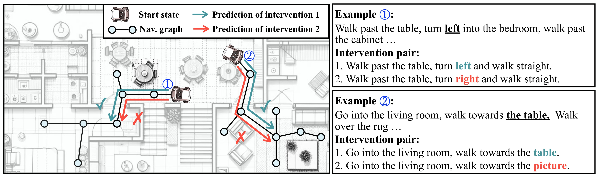
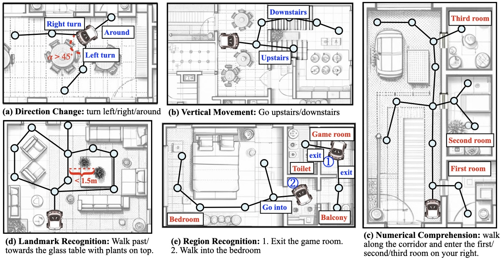
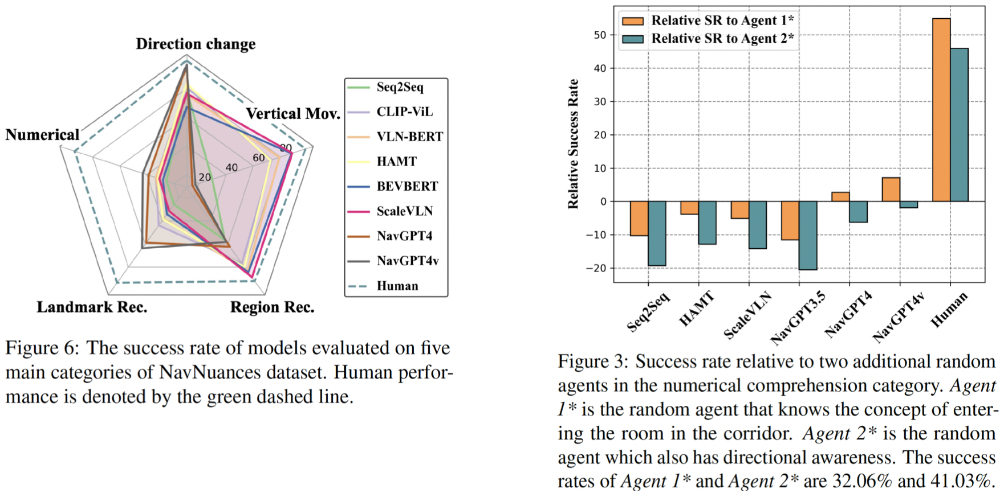

The recent work indicates the performance of the state of the art on standard VLN R2R task is high and even quite close to human performance. However, as shown in our preliminary experiments below, even a simple intervention on a common R2R VLN dataset fails to elicit a consistently strong response, even from the best supervised model. Additionally, other observations, such as the negligible high success rate of a randomly navigating agent and the unexpectedly low performance of Large Language Model (LLM)-based VLN models on standard datasets, motivates us to revisit the evaluation of VLN models.

In this work, we introduce a new evaluation framework that focuses on atomic instructions, i.e. the singular actions fundamental to VLN instructions. Diagnosing VLN models at the atomic-instruction level allows us to gauge performance through various nuanced perspectives. Our approach begins by iteratively constructing a context-free grammar (CFG) with the help of LLM to articulate and cover all components of VLN instructions in a unified representation (Section 3.1). Then, we induct and categorize the atomic components of the CFG into five principal categories (Section 3.2). Building on these categorizations, we develop a semi-automatic process for data annotation of each atomic instruction category, adhering to the CFG-defined natural instruction standards (Section 3.3). The five principal categories are demonstrated as follows:

Part of the experimental results are presented in the following figures. In Figure 6, it is evident that for simple turning commands, supervised methods significantly lag behind LLM-based approaches, even though they perform much better on the standard R2R dataset. Additionally, we observe a substantial performance decline in LLM-based methods when handling vertical movement tasks. This may explain their lower overall performance on the R2R dataset, as approximately 35% of the data involves navigating stairs. Figure 3 highlights the limitations of current VLN models in terms of numerical comprehension, as there is no observed performance improvement compared to a random agent under the two different assumptions.
